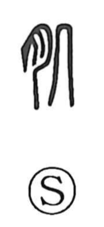

肌

Uncategorized
Kun: hada | On: ki
skin
Explanation
A phono-semantic character: the flesh radical (⺼) marks a bodily meaning, while the right-hand component 几 serves as the phonetic, giving the on reading ki. In classical usage it names the body’s outer covering—the skin—seen in compounds like 肌膚, and it is contrasted with 筋骨 (sinews and bones); combined as 肌骨, “skin and bones,” it can stand for the body as a whole. In Japanese, the word further extends to nuances of personal temperament in expressions such as hada ga au and shokunin-hada.